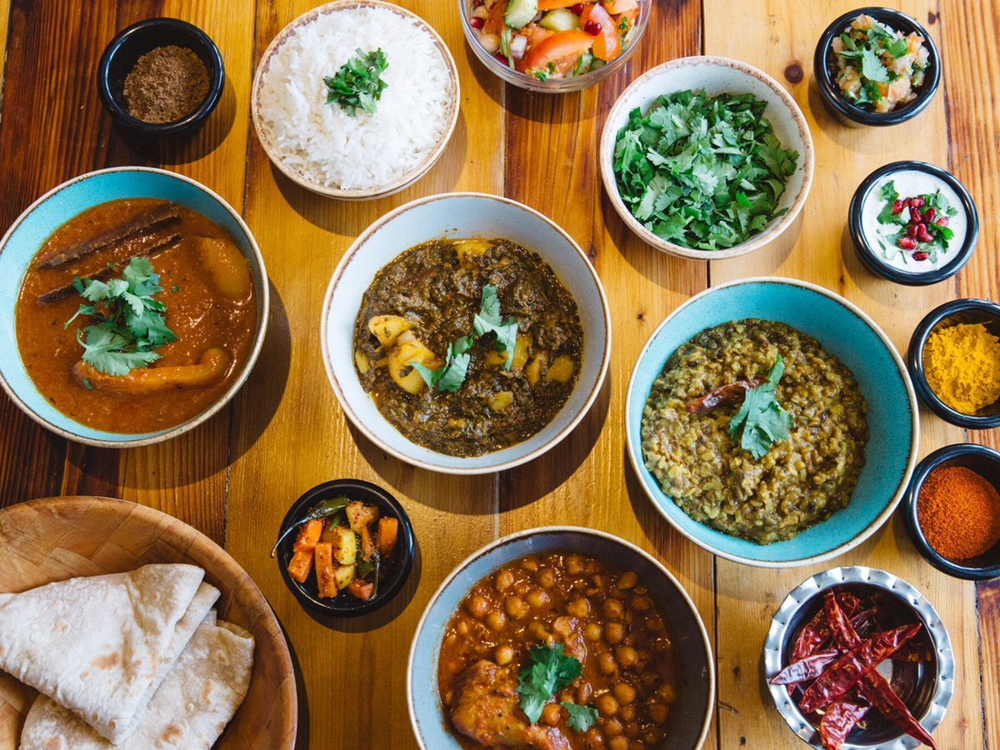

Life style
Lahore is the second largest city in Pakistan with a population of roughly 8.5 million. The traditional capital of Punjab for a thousand years, it had been the cultural center of Northern India extending from Peshawar to New Delhi. This preeminent position it holds in Pakistan as well. The people of Lahore, when they want to emphasize the uniqueness of their town say “Lahore is Lahore”. Lahore is the city of poets, artists and the center of film industry. It has the largest number of educational institutions in the country and some of the finest gardens in the continent.
Lahore successively served as a regional capital of the empires of the Shahi kingdoms in the 11th century, the Ghaznavids in the 12th century, the Ghurid State in the 12th and 13th centuries and the Mughal Empire in the 16th century. From 1802 to 1849, Lahore served as the capital city of the Sikh Empire. In the mid-19th and early 20th century, Lahore was the capital of the Punjab region under the British Raj. The traditional capital of Punjab for a millennium, Lahore was the cultural centre of the northern Indian subcontinent which extends from the eastern banks of the Indus River to New Delhi.Mughal structures such as the Badshahi Mosque, the Lahore Fort, Shalimar Gardens, the mausolea of Jehangir and Nur Jehan, Chauburji Gate, and the walled city are some of the major tourist attractions in the city.

Food
Lahori cuisine refers to the food and cuisine of the city of Lahore in Punjab, Pakistan. It is a part of regional Punjabi cuisine. Lahore is a city with an extremely rich food culture. People from Lahore are famous all over the country for their love for food. The city offers a vast variety of options when it comes to gastronomy. In recent times, the style of food has achieved popularity in a number of different countries, because of its palatable and milder taste, mainly through the Pakistani diaspora.